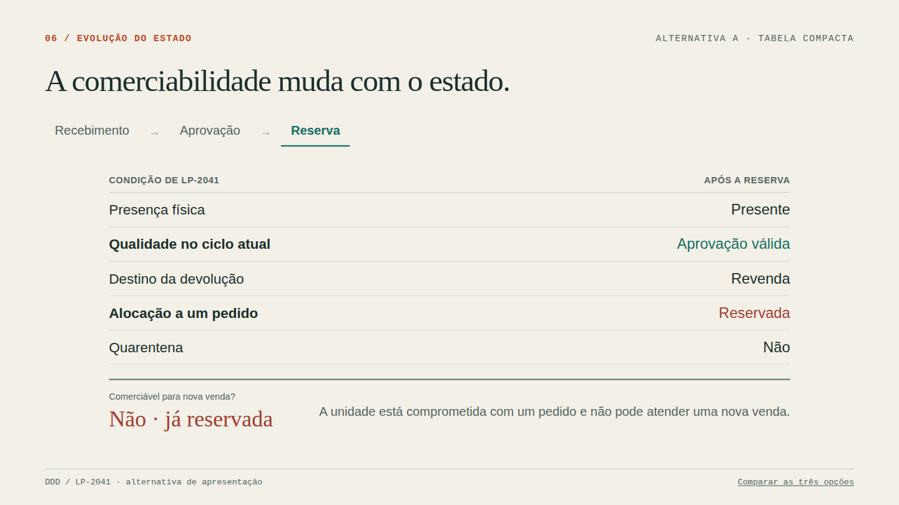

A · Tabela compacta
Uma condição por linha, sem fundo colorido. Preserva a leitura da tabela e reduz a repetição.

Experimentar alternativa A →As cinco condições continuam visíveis. Abra uma alternativa e alterne entre recebimento, aprovação e reserva.
As prévias mostram a etapa de reserva para facilitar a comparação.
Recomendação do subagente: C · Ficha da unidade. Mantém LP-2041 e suas cinco condições juntos, com a decisão em destaque. A tabela compacta ficou em segundo lugar; as condições agrupadas, em terceiro. Após a revisão, aumentamos os rótulos da C e tornamos o título do segundo grupo da B mais literal.
Qual alternativa mantém o contexto necessário para sua fala? A legibilidade deve ser confirmada no ambiente de apresentação. Estas opções não substituem o slide principal.